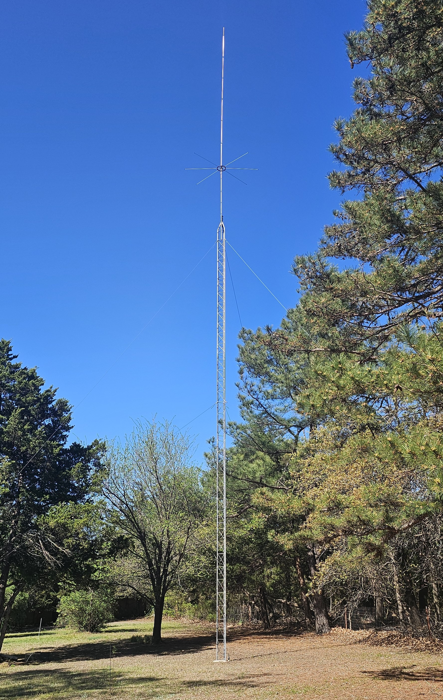
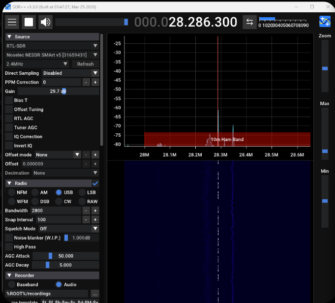
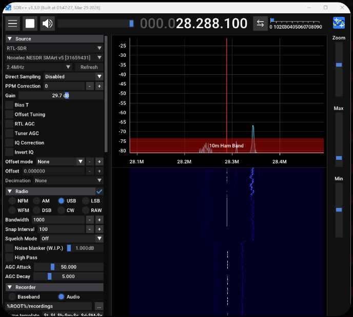
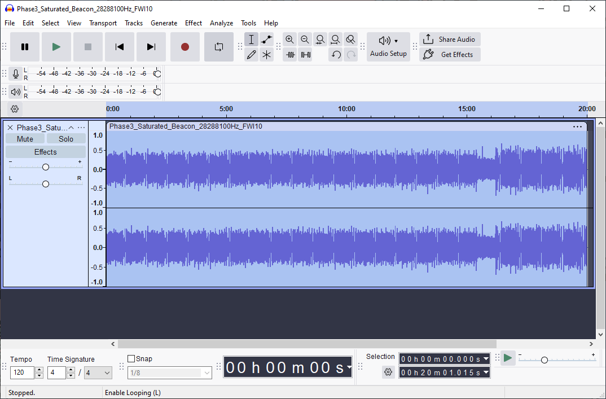
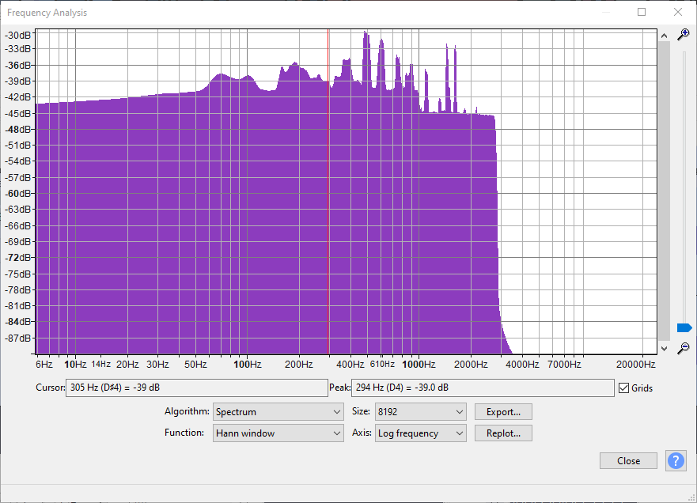
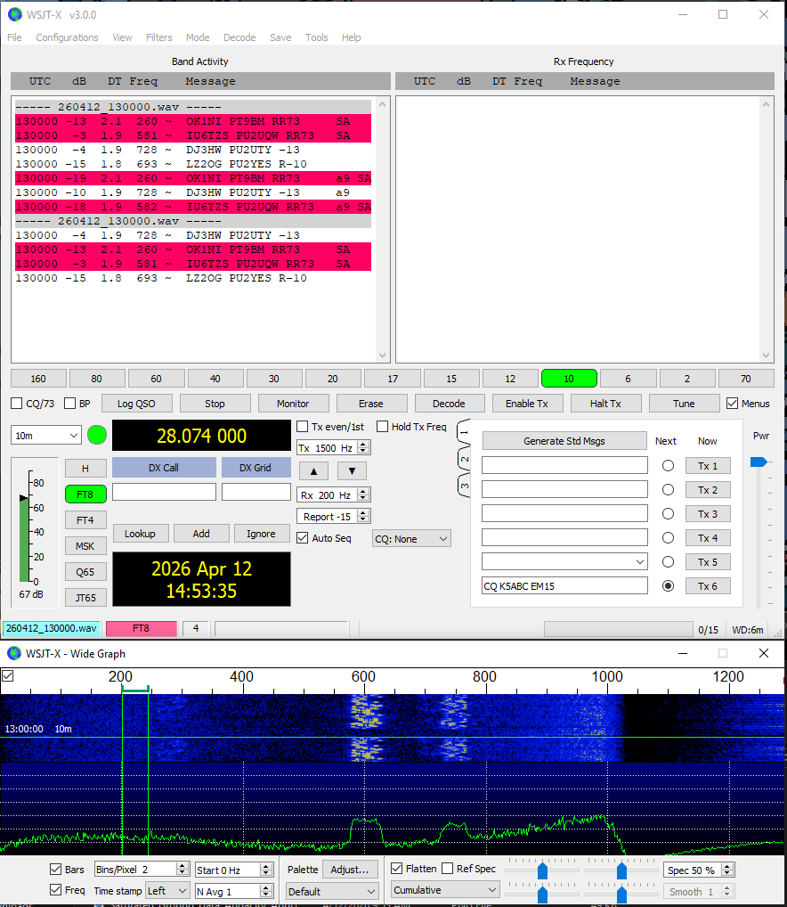
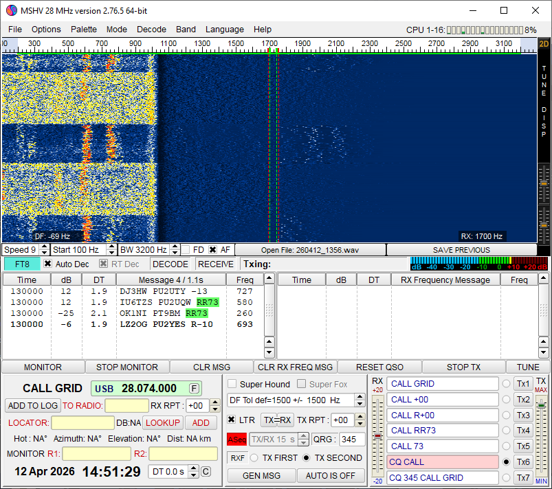
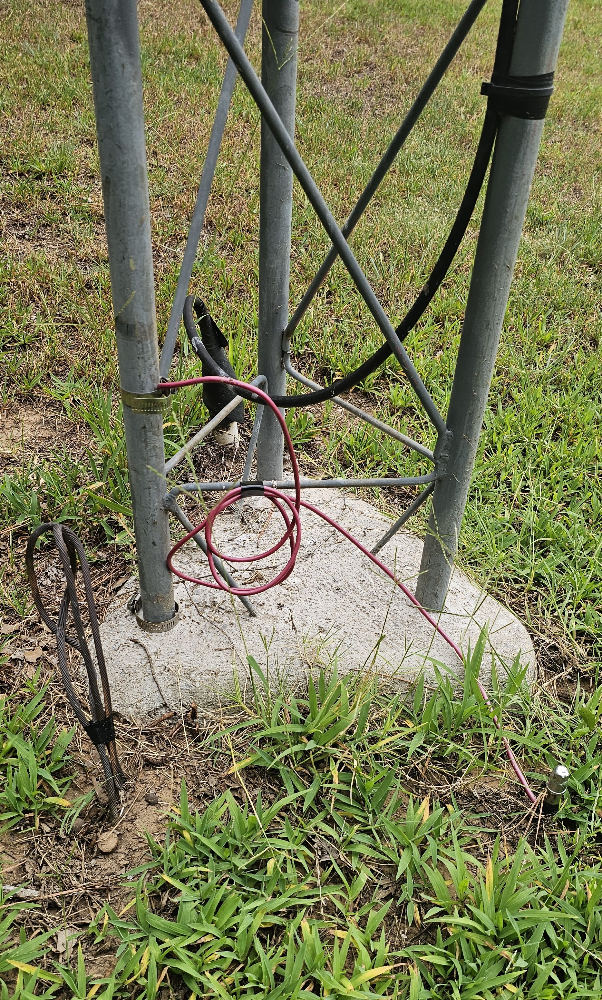

Soil Moisture & HF RF Reception
Part I: SDR Platform & Data Collection
Development of a Linux-based software-defined radio measurement platform for investigating the relationship between antenna grounding, soil conditions, and HF reception. Part I focuses on the hardware, software, troubleshooting, receiver tuning, automation, and field methodology required to turn an informal radio observation into a repeatable RF experiment.

Project Series - Part I: This page documents the development of the experimental platform and data-collection methodology. A separate Part II will focus on the completed dataset, statistical analysis, research figures, experimental limitations, and final results.
Quick Facts
| Project Type | Independent undergraduate RF research |
| Primary Role | Experimental design, SDR integration, Linux configuration, scripting, field testing & data-collection automation |
| Research Area | HF radio reception, antenna grounding, software-defined radio & environmental effects |
| Antenna | Existing custom 5/8-wave vertical designed for the 27 MHz CB region |
| Radiator Length | Approximately 21.5 ft |
| Tower | Antenna base approximately 61 ft above ground level |
| Feed Line | Approximately 120 ft of RG-213/U 50-ohm coaxial cable |
| SDR Receiver | Nooelec NESDR SMArt v5 RTL-SDR |
| Project Computer | HP EliteDesk 800 G3 Mini |
| Operating System | Linux Mint XFCE 22.3 |
| Primary Digital Signal | 10 m FT8 near 28.074 MHz |
| Wideband Scan | 26.9-28.2 MHz |
| Automated Schedule | Seven measurements per day from 08:00 through 20:00 |
| Primary Software | SDR++, WSJT-X, rtl_fm, rtl_power, Bash, Python, R & GNU Radio |
| Remote Operation | RustDesk, SSH & headless Linux configuration |
Project Origin
From CB Lore to a Testable Question
The project originated from conversations with my dad about the large CB antenna installed behind our house. Over the years, he had noticed that reception sometimes seemed especially good following rainfall.
One informal explanation among the CB operators he knew was that rain "cleaned the air" and removed material that might otherwise interfere with radio signals. Whether that explanation was correct or not, the repeated observation itself was interesting.
As an electrical engineering student becoming increasingly interested in RF systems, I started wondering whether another part of the installation might contribute to the observation: the antenna grounding system and the changing electrical properties of the surrounding soil.
Initial Research Question: Could changing soil moisture around the antenna grounding system produce a measurable change in HF reception?
The antenna itself was primarily built and installed by my dad years before this research project began. I did, however, help him install the original 6-ft ground rod by hammering it into the soil.
Years later, that same ground connection became one of the central components of my experiment.
The Existing Antenna System
Rather than constructing a laboratory antenna specifically for the project, I used the existing fixed-site antenna associated with the original reception observations.
The antenna is a custom 5/8-wave vertical designed around the 27 MHz CB region. Its radiator is approximately 21.5 ft long, with the antenna mounted at the top of a guyed tower.
The installation provided something especially useful for the experiment: a permanent RF system whose antenna, feed line, physical location, and surrounding environment could remain fixed while selected experimental variables were changed.
Learning Software-Defined Radio
Starting With SDR++
My first goal was simply learning how to use an RTL-SDR as something more than a radio receiver. Before developing an automated experiment, I needed to understand receiver gain, bandwidth, demodulation modes, waterfall displays, recording, and the behavior of real signals around the 27-28 MHz region.
SDR++ became the first interface used for the project. Early testing included receiver validation, spectrum exploration, CB reception, beacon searching, and eventually digital FT8 signals.

Early FT8 reception while experimenting with receiver gain, USB demodulation, and bandwidth settings.

FT8 eventually became much more useful than unpredictable voice traffic for developing the measurement system.
Why FT8?
Ordinary CB transmissions were useful for confirming reception, but they were difficult to use as a primary experimental metric. Different operators transmit from different locations, at different power levels, and at unpredictable times.
FT8 offered a better development signal because transmissions occur in synchronized 15-second cycles and WSJT-X can automatically report decoded messages, SNR, timing offset, and audio frequency.
This gave the project something that a screenshot of a voice signal could not provide: machine-readable measurements that could eventually be collected automatically.
Early Natural-Saturation Testing
The original experimental plan called for beginning with dry soil and then progressing toward wetter conditions. Oklahoma weather did not cooperate.
The first major collection opportunity instead occurred during already wet conditions following rainfall. Rather than waiting indefinitely for a dry baseline, I used the available conditions to begin testing the measurement workflow.

A narrowband signal discovered while searching the 10 m region during an early wet-condition test.

The SDR++ bandwidth was narrowed around the signal before a longer recording was collected.
Field Research Lesson: The environment determined which condition could be tested first. The methodology therefore had to evolve around the weather that was actually available rather than follow the original sequence exactly.
The First Data-Processing Problem
Recording Was Easy. Reusing the Recording Was Not.
Early SDR++ tests were saved as large WAV recordings so they could be processed later on my primary computer.
This sounded straightforward, but getting recorded SDR audio into other analysis programs became one of the first major troubleshooting stages of the project.

A 20-minute SDR++ recording opened in Audacity for offline inspection.

FFT analysis provided numerical frequency-domain information beyond the original SDR++ waterfall.

Recorded FT8 data eventually being decoded by WSJT-X.

MSHV was also tested while looking for a reliable offline-decoding workflow.
Sample formats, timing, resampling, file compatibility, and decoder expectations made the offline workflow much more fragile than I had expected.
That difficulty eventually changed the architecture of the project. Rather than repeatedly recording large files and decoding them later, I began working toward a system that could send live receiver audio directly into WSJT-X.
A Dedicated Linux SDR Computer
Long-duration data collection also created a practical hardware problem. My normal computer could not remain permanently attached to the antenna, and manually setting up a laptop for every measurement would limit the amount of data that could realistically be collected.
To solve this, I acquired an HP EliteDesk 800 G3 Mini and converted it into a dedicated always-available SDR computer.
| Computer | HP EliteDesk 800 G3 Mini |
| Processor | Intel Core i7-6700 |
| Memory | 16 GB RAM |
| Storage | 256 GB SSD |
| Operating System | Linux Mint XFCE 22.3 |
| Remote Access | RustDesk + SSH |

This system eventually became the permanent interface between the antenna and the automated measurement software.
Headless Linux Troubleshooting
Remote Operation Without a Physical Monitor
The EliteDesk was intended to operate without its own keyboard, mouse, or monitor. That made remote access necessary, but a fully headless graphical Linux system introduced another set of problems.
RustDesk initially depended on the system having an active display, so I configured a software-based dummy display rather than leaving a physical monitor or HDMI dummy plug permanently connected.
SSH was also configured for terminal access. This gave the project two complementary remote interfaces:
- SSH for scripts, configuration, file management, and command-line troubleshooting
- RustDesk when SDR++, WSJT-X, audio controls, or other graphical applications needed to be observed
Virtual Audio Routing
Getting Receiver Audio Into WSJT-X
The next major integration problem was audio.
WSJT-X expects an audio input device, while the SDR receiver software produces a demodulated audio stream. To connect the two without physical audio cables, I created a virtual audio path using the Linux PipeWire/PulseAudio compatibility layer.
The completed system uses a virtual sink monitored by WSJT-X. Receiver audio can therefore be routed internally from the SDR software directly into the decoder.

The screenshot above shows the complete audio path operating during a recreated data-collection run. WSJT-X is actively decoding FT8, the Wide Graph shows received signal activity, the terminal displays the running collection script, and the volume control shows applications connected to the virtual audio monitor.
GNU Radio Experimentation
I also explored GNU Radio as a possible replacement for SDR++ and as a way to build the receive chain explicitly from DSP blocks.
One prototype displayed the RTL-SDR spectrum directly. A second attempt translated and filtered the 28.074 MHz FT8 region, resampled the signal, converted it into an audio stream, and attempted to route that audio into the Linux sound system for WSJT-X.
The prototypes were useful for understanding the receiver chain, but they added complexity at a stage when the real requirement was repeatable unattended collection.
Design Decision: Instead of continuing to expand the GNU Radio flowgraph, I moved toward smaller command-line tools that could be scripted, tested independently, and restarted easily.
The Single-SDR Constraint
The experiment needed two different types of measurements:
- FT8 reception and decoding at approximately 28.074 MHz
- A wider 26.9-28.2 MHz spectrum measurement
Only one RTL-SDR was available, and two applications could not control the same USB receiver simultaneously.
This meant the system could not simply run FT8 reception and a
wideband rtl_power scan at the same time.
Final Approach: Each measurement run was divided into two sequential stages: first a dedicated FT8 receive window, followed by a separate wideband power scan after the receiver was released.
The First Scripted Workflow
Automating the Manual Procedure
The first useful automation was still interactive. A guided Bash script created a new run folder, prompted for soil conditions, waited through a timed FT8 test using SDR++, asked me to close SDR++, verified that the RTL-SDR was available, and then launched the power scan.
Early Guided Run
- Create a timestamped run folder
- Record the current ground and soil condition
- Prepare SDR++ and WSJT-X
- Record a timed FT8 decode window
- Close SDR++
- Verify that the SDR was no longer busy
- Run
rtl_power - Save the resulting raw data and summaries
This version established the measurement order and run-folder structure before I attempted to remove human interaction completely.
Removing SDR++ From Data Collection
The major software breakthrough came from using
rtl_fm as the FT8 receiver instead of SDR++.
Unlike the graphical SDR software, rtl_fm could be
started and stopped entirely from Bash. Its demodulated 48 kHz audio
could then be piped directly into the virtual WSJT-X audio sink.
rtl_fm -f 28.0745M -M usb -s 48k -g 30 -p 0 |
pacat --raw --rate=48000 --channels=1 --format=s16le \
--latency-msec=50 --device=wsjtx_sinkWith this change, the graphical SDR application no longer had to be opened, configured, or closed manually during each scheduled test.
Isolating Each FT8 Measurement
WSJT-X continuously appends received messages to its
ALL.TXT log file. Reading the complete log after every
test would repeatedly include older decodes from previous measurements.
My first helper scripts solved this manually by saving the current line count before a test and extracting only the lines added afterward.
That logic was later incorporated directly into the automated receiver:
START_LINE=$(wc -l < "$ALLTXT")
# Run receiver...
tail -n +"$((START_LINE + 1))" "$ALLTXT" > "$FT8_RAW"
Each measurement therefore received its own independent
ft8_raw.txt file rather than relying on one continuously
growing WSJT-X history file.
Automatic FT8 Summaries
A Python parser converted the raw WSJT-X lines into summary values for each measurement window.
FT8 Metrics
- Total decodes
- Number of decode periods
- Average SNR
- Best and worst SNR
- Average time offset
- Maximum absolute time offset
- Average audio frequency
- Minimum and maximum audio frequency
Why Save Both Raw & Summary Data?
- Raw logs preserved every decoded message
- Summary files simplified later processing
- Individual runs remained independently auditable
- Unexpected values could be traced back to original output
Receiver Tuning
Replacing Guesswork With Repeated Tests
Before beginning long unattended campaigns, I wanted the command-line receiver to perform reliably enough that a poor software configuration would not become an experimental variable.
I wrote a tuning script that systematically tested frequency offsets, receiver gain, PPM correction, RTL-SDR options, audio latency, and even an intentionally incorrect LSB configuration as a sanity check.
The strongest frequency candidates were then tested again in a narrower repeated experiment.
| rtl_fm Frequency | Repeated Tests | Avg. FT8 Decodes / 5 min |
|---|---|---|
| 28.0745 MHz | 2 | 57.5 |
| 28.0747 MHz | 2 | 41.5 |
| 28.0751 MHz | 3 | 38.7 |
| 28.0749 MHz | 3 | 27.3 |
The repeated tests were important because HF propagation was changing during the tuning experiment itself. One configuration could perform extremely well for five minutes and then perform much worse during its next test.
Final Automated Receiver Configuration:
28.0745 MHz USB
30 dB requested tuner gain
0 ppm programmed frequency correction
48 kHz audio output
50 ms virtual-audio latency
Wideband Power Scanning
After the FT8 receiver released the SDR, the second stage of every
run used rtl_power to measure the broader spectrum.
rtl_power -f 26.9M:28.2M:10k -g 30 -i 10 -e 5m power_raw.csvThe 5-minute scan covered the region containing the original CB activity, the 10 m FT8 frequency, and nearby beacon activity.
A Python script automatically summarized four repeatable windows:
- 27.185 MHz - CB Channel 19
- 27.385 MHz - CB Channel 38
- 28.074 MHz - FT8
- 28.200 MHz - beacon region
For each region, the script saved the number of samples plus average, peak, and minimum receiver-reported relative power.
The Final Automated Collection Workflow
Once the individual receiver, decoder, spectrum, and logging tools were working independently, they were combined into a single scheduled collection controller.
The script created a new experimental session, recorded the selected grounding configuration, waited for predefined measurement times, and automatically launched each complete run.
Scheduled Collection Times
08:00 | 10:00 | 12:00 | 14:00 | 16:00 | 18:00 | 20:00

This recreated run shows the finished collection workflow in operation.
The terminal has reached a scheduled measurement and launched the
30-minute rtl_fm FT8 collection while WSJT-X is actively
decoding the incoming audio.
The Wide Graph makes the received FT8 activity visible, while the
audio controls verify that the software is connected to the
WSJTX_Virtual_Audio monitor.
Letting Noncritical Failures Stay Noncritical
The workflow screenshot also captured a real
HTTP Error 503: Service Unavailable from Open-Meteo.
Weather logging was useful environmental context, but it was not the primary RF measurement. The scheduler was therefore designed so that a temporary external API failure would be reported without cancelling an otherwise valid SDR run.
In the screenshot, the weather request fails, the script reports the error, checks SDR availability, and continues directly into the FT8 measurement.
Automation Principle: A failure in supplemental environmental logging should not destroy an RF measurement that can still be collected successfully.
What One Automated Run Produces

At the end of the cycle, the terminal lists the files generated for that individual measurement.
| File | Purpose |
|---|---|
README.txt |
Human-readable description of the run configuration |
condition.csv |
Grounding configuration and receiver settings |
weather_summary.csv |
Environmental information associated with the run |
ft8_raw.txt |
Raw WSJT-X decode lines collected during the run |
ft8_summary.txt |
Automatically calculated FT8 statistics |
rtl_fm_command.txt |
Exact receiver command used for the measurement |
rtl_fm_receiver.log |
RTL-SDR receiver diagnostic output |
power_raw.csv |
Raw 26.9-28.2 MHz spectrum measurement |
power_summary.txt |
Automatically summarized spectral windows |
power_command.txt |
Exact rtl_power command used for the run |
rtl_power.log |
Power-scan diagnostic output |
Saving both the processed values and the commands used to produce them made each run easier to audit later without relying on memory of how the software had been configured.
Grounding Configuration Development
The Original 6-ft Ground Rod
The original antenna grounding arrangement used the same approximately 6-ft ground rod that had been installed when my dad originally built the antenna system.
That configuration became the starting point for the later controlled field measurements.
Creating a More Surface-Sensitive Electrode
As the experiment developed, I became concerned that applying water only near the surface might have relatively little influence on a ground rod extending approximately six feet into the earth.
To create an experimental grounding arrangement deliberately more dependent on shallow soil conditions, I purchased a steel screwdriver and modified it for use as a short grounding electrode.
The resulting electrode was approximately 8 in long, with roughly 7 in inserted into the soil. I connected it to the antenna structure using a dedicated copper jumper.

I performed the grounding changes myself, installed the shallow experimental connection, documented the configuration, and managed the subsequent field-test conditions.
Controlled Soil Wetting
The shallow electrode also made it practical to create a repeatable local wetting condition rather than waiting exclusively for rainfall.
During the artificial-saturation phase, I applied approximately 5 gallons of well water each evening over an area roughly 3 ft by 3 ft centered around the shallow electrode.
The grounding hardware and receiver configuration were kept unchanged while the local soil condition was deliberately altered.
Methodology Goal: Separate a controlled local change in soil conditions from the much broader atmospheric changes that accompany natural rainfall.
Environmental Data Logging
10 m reception can change dramatically for reasons completely unrelated to the antenna ground. Environmental context therefore needed to be preserved alongside the RF measurements.
The automated system attempted to collect Open-Meteo information including:
- Temperature
- Relative humidity
- Dew point
- Surface pressure
- Cloud cover
- Wind speed
- Current precipitation
- Recent precipitation totals
- Modeled near-surface soil temperature
- Modeled near-surface soil moisture
Oklahoma Mesonet observations were also downloaded separately over each campaign date range and matched to RF measurements using local timestamps.
Those environmental variables become more important in Part II, where they can be considered alongside the completed RF dataset.
From Run Folders to Analysis-Ready Data
Automated collection solved one problem and created another: every scheduled measurement generated its own folder containing multiple raw and summarized files.
I therefore wrote a Python aggregation script that walks through the timestamped run folders and produces campaign-level CSV files.
Combined Outputs
-
master_runs.csv- one row per scheduled measurement -
master_ft8_decodes.csv- one row per individual FT8 decode -
master_power_summary.csv- one row per run containing the selected spectral windows -
master_weather_summary.csv- one row per run containing environmental context
Mesonet observations could then be merged into the master run table using a time window around each scheduled measurement.
This was the final step in Part I: converting a collection of individual SDR experiments into a structured dataset ready for statistical analysis.
Core Collection Software
The finished measurement system grew from many small scripts rather than one monolithic program. Each script handled a specific task, which made individual parts easier to test, modify, and troubleshoot.
| Script | Role in Part I |
|---|---|
run_test.sh |
Early guided single-SDR workflow using manual SDR++ FT8 reception |
ft8_test.sh |
Timed WSJT-X logging during the original manual receiver workflow |
start_ft8_marker.sh |
Early helper used to mark the current position in the WSJT-X log |
tune_rtl_fm_ft8.sh |
Broad automated sweep of command-line FT8 receiver settings |
tune_rtl_fm_ft8_narrow.sh |
Repeated comparison of the strongest receiver configurations |
ft8_rtl_fm_test.sh |
Command-line FT8 receiver and automatic WSJT-X log isolation |
summarize_wsjtx.py |
Parses raw FT8 decoder output and calculates run statistics |
power_scan.sh |
Controls the 26.9-28.2 MHz rtl_power measurement |
summarize_power.py |
Extracts repeatable CB, FT8, and beacon spectral windows |
log_openmeteo_weather.py |
Attempts to log environmental context for each scheduled measurement |
continuous_soil_rf_test.sh |
Main unattended scheduler and collection controller |
combine_soil_rf_runs.py |
Converts individual run folders into campaign-level datasets |
fetch_mesonet_range.R |
Downloads Oklahoma Mesonet observations for campaign dates |
merge_mesonet_with_master.py |
Time-aligns Mesonet observations with the RF master dataset |
Additional scripts were later developed for statistical analysis and publication-quality figure generation. Those belong with the analysis and results documented in Part II rather than with the collection platform described here.
How the Workflow Evolved
-
Manual SDR exploration
Learn SDR++, tune signals, and identify usable references -
Recorded WAV experiments
Attempt offline Audacity, WSJT-X, and MSHV processing -
Dedicated Linux computer
Move the receiver to an always-available remote system -
Virtual audio
Route live receiver audio directly into WSJT-X -
GNU Radio prototypes
Experiment with explicit DSP receive chains -
Guided Bash workflow
Standardize the order of manual FT8 and power measurements -
Command-line rtl_fm receiver
Remove SDR++ from the required collection process -
Receiver tuning
Systematically establish repeatable operating settings -
Scheduled automation
Run the complete experiment unattended seven times per day -
Dataset aggregation
Convert individual run folders into analysis-ready master tables
Major Troubleshooting Challenges
RF & Signal Processing
- Selecting repeatable signals instead of random CB voice traffic
- Determining practical gain and bandwidth settings
- Getting SDR recordings into WSJT-X
- Managing sample-rate and audio-format compatibility
- Developing a reliable command-line FT8 receiver
- Working around the single-SDR hardware limitation
- Distinguishing receiver problems from changing propagation
Linux & Automation
- Headless graphical remote access
- RustDesk configuration
- SSH setup and remote administration
- PipeWire/PulseAudio virtual routing
- WSJT-X input-device configuration
- USB receiver ownership between applications
- Automatic process termination
- External weather-service failures
- Long-duration scheduled execution
- Organizing large numbers of generated files
Engineering Takeaways From Part I
Measurement Systems Are Projects of Their Own
The antenna experiment could not produce meaningful measurements until the receiver, audio path, decoder, timing, file structure, and spectral tools all worked together consistently.
Automation Requires Reliable Small Pieces
The final scheduler became manageable because FT8 collection, power scanning, weather logging, and summarization were first developed as separate tools.
Manual Procedures Reveal What Should Be Automated
Repeatedly opening SDR++, marking WSJT-X logs, closing the receiver, running a power scan, and organizing files made the weak points in the workflow obvious. Each repeated manual action became a candidate for automation.
Failures Should Be Contained
The Open-Meteo error captured in the final workflow screenshot is a good example. Losing supplemental weather data should not automatically mean losing an otherwise valid RF measurement.
Field Testing Changes the Original Plan
Weather, propagation, hardware behavior, and software limitations all forced changes to the original experimental sequence. The eventual methodology was stronger because it developed in response to those problems.
Keep the Raw Data
Summary statistics made hundreds of generated files manageable, but the original WSJT-X logs and rtl_power outputs were preserved so that unusual values could still be traced back to the underlying measurement.
What Part I Demonstrates
RF & Experimental Methods
- Software-defined radio operation
- HF spectrum monitoring
- FT8 weak-signal reception
- USB demodulation
- Spectral measurement
- Receiver tuning
- Antenna grounding experimentation
- Controlled field-test design
- Environmental-variable logging
- Repeatable measurement methodology
Linux, Programming & Integration
- Linux Mint administration
- Bash scripting
- Python scripting
- R scripting
- GNU Radio experimentation
- WSJT-X integration
- PipeWire / PulseAudio routing
- SSH and remote administration
- RustDesk headless operation
- Process management
- Scheduled automation
- Structured data logging
- CSV aggregation
- System troubleshooting
Final Data-Collection Platform
By the end of the development process, the project no longer depended on manually opening SDR software, recording WAV files, moving files between computers, or starting each measurement by hand.
The dedicated Linux system could wait for a scheduled time, create a new run directory, record the experimental configuration, attempt environmental logging, receive FT8 for 30 minutes, isolate the new WSJT-X decodes, calculate summary values, release the RTL-SDR, perform a 5-minute spectrum scan, summarize the selected frequency windows, and then wait for the next scheduled measurement.
That automated platform became the foundation for the full field dataset and the analysis that followed.
Next: Part II - Data Analysis & Research Results
Part II will continue from the completed measurement platform and focus on the collected campaigns, FT8 and spectral behavior, time-of-day effects, controlled watering comparisons, statistical modeling, experimental limitations, and final research results.